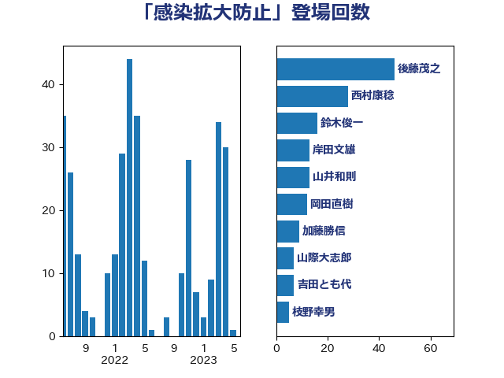

単語「感染拡大防止」

| 後藤茂之 | 自由民主党 | 46 回 |
| 西村康稔 | 自由民主党 | 28 回 |
| 鈴木俊一 | 自由民主党 | 16 回 |
| 岸田文雄 | 自由民主党 | 13 回 |
| 山井和則 | 立憲民主党 | 13 回 |
| 岡田直樹 | 自由民主党 | 12 回 |
| 加藤勝信 | 自由民主党 | 9 回 |
| 山際大志郎 | 自由民主党 | 7 回 |
| 吉田とも代 | 日本維新の会 | 7 回 |
| 枝野幸男 | 立憲民主党 | 5 回 |
| 倉林明子 | 日本共産党 | 5 回 |
| 源馬謙太郎 | 立憲民主党 | 4 回 |
| 川田龍平 | 立憲民主党 | 4 回 |
| 羽田次郎 | 立憲民主党 | 3 回 |
| 神谷政幸 | 自由民主党 | 3 回 |
| 古賀篤 | 自由民主党 | 3 回 |
| 鰐淵洋子 | 公明党 | 2 回 |
| 長友慎治 | 国民民主党 | 2 回 |
| 鈴木英敬 | 自由民主党 | 2 回 |
| 野村哲郎 | 自由民主党 | 2 回 |
| 道下大樹 | 立憲民主党 | 2 回 |
| 赤澤亮正 | 自由民主党 | 2 回 |
| 西銘恒三郎 | 自由民主党 | 2 回 |
| 藤丸敏 | 自由民主党 | 2 回 |
| 稲津久 | 公明党 | 2 回 |
| 田村智子 | 日本共産党 | 2 回 |
| 玉木雄一郎 | 国民民主党 | 2 回 |
| 浦野靖人 | 日本維新の会 | 2 回 |
| 梅村聡 | 日本維新の会 | 2 回 |
| 柚木道義 | 立憲民主党 | 2 回 |
| 林芳正 | 自由民主党 | 2 回 |
| 早稲田ゆき | 立憲民主党 | 2 回 |
| 斉藤鉄夫 | 公明党 | 2 回 |
| 島村大 | 自由民主党 | 2 回 |
| 小田原潔 | 自由民主党 | 2 回 |
| 吉良よし子 | 日本共産党 | 2 回 |
| 古屋範子 | 公明党 | 2 回 |
| 佐藤英道 | 公明党 | 2 回 |
| 佐藤啓 | 自由民主党 | 2 回 |
| 伊佐進一 | 公明党 | 2 回 |
| 今枝宗一郎 | 自由民主党 | 2 回 |
| こやり隆史 | 自由民主党 | 2 回 |
| 高野光二郎 | 自由民主党 | 1 回 |
| 高木真理 | 立憲民主党 | 1 回 |
| 鈴木庸介 | 立憲民主党 | 1 回 |
| 野田聖子 | 自由民主党 | 1 回 |
| 芳賀道也 | 国民民主党 | 1 回 |
| 自見はなこ | 自由民主党 | 1 回 |
| 米山隆一 | 立憲民主党 | 1 回 |
| 竹内真二 | 公明党 | 1 回 |
| 稲富修二 | 立憲民主党 | 1 回 |
| 神谷裕 | 立憲民主党 | 1 回 |
| 磯崎仁彦 | 自由民主党 | 1 回 |
| 石井啓一 | 公明党 | 1 回 |
| 田名部匡代 | 立憲民主党 | 1 回 |
| 田中健 | 国民民主党 | 1 回 |
| 甘利明 | 自由民主党 | 1 回 |
| 牧山ひろえ | 立憲民主党 | 1 回 |
| 漆間譲司 | 日本維新の会 | 1 回 |
| 泉田裕彦 | 自由民主党 | 1 回 |
| 河西宏一 | 公明党 | 1 回 |
| 櫻井周 | 立憲民主党 | 1 回 |
| 横沢高徳 | 立憲民主党 | 1 回 |
| 柴田巧 | 日本維新の会 | 1 回 |
| 柳本顕 | 自由民主党 | 1 回 |
| 柳ヶ瀬裕文 | 日本維新の会 | 1 回 |
| 杉田水脈 | 自由民主党 | 1 回 |
| 杉尾秀哉 | 立憲民主党 | 1 回 |
| 杉久武 | 公明党 | 1 回 |
| 打越さく良 | 立憲民主党 | 1 回 |
| 徳永エリ | 立憲民主党 | 1 回 |
| 岬麻紀 | 日本維新の会 | 1 回 |
| 岩田和親 | 自由民主党 | 1 回 |
| 岡本三成 | 公明党 | 1 回 |
| 山田美樹 | 自由民主党 | 1 回 |
| 山田勝彦 | 立憲民主党 | 1 回 |
| 山本剛正 | 日本維新の会 | 1 回 |
| 小宮山泰子 | 立憲民主党 | 1 回 |
| 宮本徹 | 日本共産党 | 1 回 |
| 宮口治子 | 立憲民主党 | 1 回 |
| 天畠大輔 | れいわ新選組 | 1 回 |
| 大塚耕平 | 国民民主党 | 1 回 |
| 塩川鉄也 | 日本共産党 | 1 回 |
| 堀内詔子 | 自由民主党 | 1 回 |
| 城井崇 | 立憲民主党 | 1 回 |
| 吉田統彦 | 立憲民主党 | 1 回 |
| 井上信治 | 自由民主党 | 1 回 |
| 丹羽秀樹 | 自由民主党 | 1 回 |
| 丸川珠代 | 自由民主党 | 1 回 |
| 中曽根康隆 | 自由民主党 | 1 回 |